kmeans.h implements a number of algorithm for k-means quantisation. It supports
- data of type
floatordouble; - l1 and l2 distances;
- random selection and
k-means++[2] initialization methods; - the basic Lloyd [7] and the accelerated Elkan [5] optimization methods.
Usage
To use kmeans.h to learn clusters from some training data, instantiate a VlKMeans object, set the configuration parameters, initialise the cluster centers, and run the trainig code. For instance, to learn numCenters clusters from numData vectors of dimension dimension and storage type float using L2 distance and at most 100 Lloyd iterations of the Lloyd algorithm use:
Use vl_kmeans_get_energy to get the solution energy (or an upper bound for the Elkan algorithm) and vl_kmeans_get_centers to obtain the numCluster cluster centers. Use vl_kmeans_quantize to quantize new data points.
Initialization algorithms
kmeans.h supports the following cluster initialization algorithms:
- Random data points (vl_kmeans_seed_centers_with_rand_data) initialize the centers from a random selection of the training data.
- k-means++ (vl_kmeans_seed_centers_plus_plus) initialize the centers from a random selection of the training data while attempting to obtain a good coverage of the dataset. This is the strategy from [2] .
Optimization algorithms
kmeans.h supports the following optimization algorithms:
- Lloyd [7] (VlKMeansLloyd). This is the standard k-means algorithm, alternating the estimation of the point-to-cluster memebrship and of the cluster centers (means in the Euclidean case). Estimating membership requires computing the distance of each point to all cluster centers, which can be extremely slow.
- Elkan [5] (VlKMeansElkan). This is a variation of [7] that uses the triangular inequality to avoid many distance calculations when assigning points to clusters and is typically much faster than [7] . However, it uses storage proportional to the square of the number of clusters, which makes it unpractical for a very large number of clusters.
Technical details
Given data points  , k-means searches for 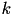 vectors
, k-means searches for 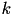 vectors  (cluster centers) and a function
(cluster centers) and a function  (cluster memberships) that minimize the objective:
(cluster memberships) that minimize the objective:
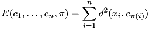
A simple procedure due to Lloyd [7] to locally optimize this objective alternates estimating the cluster centers and the membeship function. Specifically, given the membership function , the objective can be minimized independently for eac 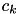 by minimizing
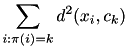
For the Euclidean distance, the minimizer is simply the mean of the points assigned to that cluster. For other distances, the minimizer is a generalized average. For instance, for the 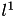 distance, this is the median. Assuming that computing the average is linear in the number of points and the data dimension, this step requires 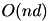 operations.
Similarly, given the centers 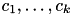, the objective can be optimized independently for the membership 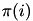 of each point 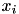 by minimizing 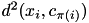 over 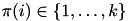. Assuming that computing a distance is  , this step requires 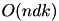 operations and dominates the other.
, this step requires 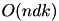 operations and dominates the other.
The algorithm usually starts by initializing the centers from a random selection of the data point.
Initialization by k-means++
[2] proposes a randomized initialization of the centers which improves upon random selection. The first center 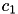 is selected at random from the data points 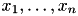 and the distance from this center to all points 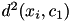 is computed. Then the second center 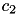 is selected at random from the data points with probability proportional to the distance, and the procedure is repeated using the minimum distance to the centers collected so far.
Speeding up by using the triangular inequality
[3] proposes to use the triangular inequality to avoid most distances calculations when computing point-to-cluster membership and the cluster centers did not change much from the previous iteration.
This uses two key ideas:
- If a point is very close to its current center 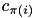 and this center is very far from another center 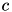, then the point cannot be assigned to . Specifically, if 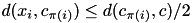, then also 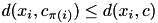.
- If a center is updated to 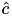, then the variation of the distance of the center to any point can be bounded by 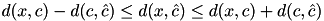.
The first idea is used by keeping track of the inter-center distances and exlcuding reassigments to centers too far away from the current assigned center. The second idea is used by keeping for each point an upper bound to the distance to the currently assigned center and a lower bound to the distance to all the other centers. Unless such bounds do not intersect, then a point need not to be reassigned. See [3] for details.